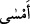

buyurmuştur. Efendimiz (s.a.) buyurmuştur ki: “Değerli olmayı sağlayan şey
takvâdır.”[214] İnsanların en takvâlısı, insânî ahlâktan en uzak ve rabbânî ahlâka en
yakın olanıdır. Takvâ kaçınma demektir. Muttakî kendi nefsinden kaçınıp rabbine
gidendir. O, Allah katında diğerlerinden daha değerlidir.”
14. Bedevîler «İnandık» dediler. De ki: Siz iman etmediniz, ama «Boyun eğdik»
deyin. Henüz iman kalplerinize yerleşmedi. Eğer Allah’a ve elçisine itaat
ederseniz, Allah işlerinizden hiçbir şeyi eksiltmez. Çünkü Allah çok bağışlayan, çok
esirgeyendir.
Bedevîler çöl/bâdiye ehli kimselerdir. Kendileriyle alâkalı tafsilat Fetih suresinde
geçmiştir. Yûsuf suresinde müennes fâile müzekker fiil isnad edilmişken Bedevîler
hakkında müzekker faile müennes fiil isnad edilmesinin sebebi bedevîlerin akıllarındaki
noksanlıktır. Kendileri hakkında müzekker fiil kullanılan kadınlara gelince onlar Azizin
hanımını hizmeçisine meylettiği için kınamışlardır. Bu ise akıllı kimselerin şanıdır.
Âyet-i kerime Benî Esed kabilesinden bir grup hakkında nazil olmuştur. Kurak bir
yılda Medine’ye gelmişlerdi. Kelime-i şehadet getirdiler. Rasûlullah (s.a.)’e diyorlardı
ki: Araplar atlarının üzerinde canlarıyla savaşarak sana geldiler. Biz ise yüklerimiz,
aile ve çocuklarımızla sana geldik, filanca oğullarının savaştığı gibi seninle
savaşmadık. Zekât verdiklerini kasd ediyorlar ve yaptıklarını Rasulullah’ın başına
kakıyorlardı.
Onlara red olarak “De ki: Siz iman etmediniz.” Çünkü iman, Allah’ı ve Rasûlü’nü
tasdik etmekle beraber tasdik edilen şeyin hak olduğuna kanâat getirip kalben mutmain
olmaktır. Bu, sizde bulunmadı. Zira bulunsaydı bahsettiğiniz Müslüman olmak ve
savaşmamak durumunu başa kakmazdınız. Nitekim surenin sonunda bu husus anlatılır.
Yukarıda da belirtildiği gibi tasdik, küfrün çirkinliği ve savaşmanın şenâati bilindikten
sonra gerçekleşir ki bu da akıllı kimselerin işidir. Zira akıllı kimse çirkin olduğunu
bildiği şeyi terk etmekle başa kakmaz.
(
) barışa girdi demektir. (
) sabah vaktine girdi, (
) akşam vaktine girdi (
)
kışa girdi demek gibidir. Yani şöyle deyin: Biz kendi canlarımızın korkusuyla barışa
sulha ve boyun eğme hükmüne dâhil olduk. Kuşkusuz İslam, boyun eğmek ve barışa
girmektir. Şehadeti izhar ve muharebeyi terk etmek de bunu gösterir. Yani boyun eğme
ve barışa girmeyi ifade eder.